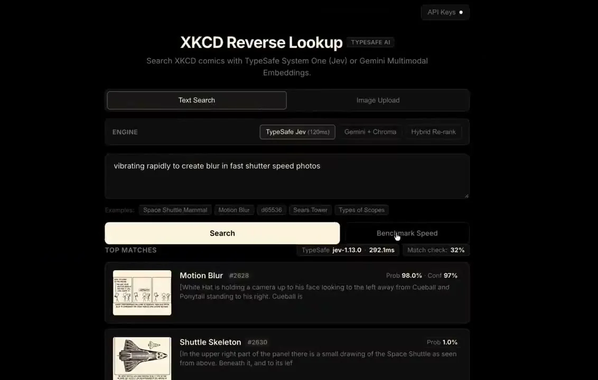
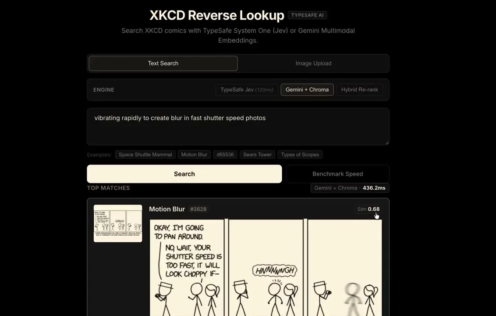

体験
同じ入力に対して、方式の違う2つの検索を、切り替えて比べられる。速さと結果の表示が並び、選択の材料になる。
- Jevは確率（Prob）とconfidence（Conf）を別に出し、埋め込み検索は類似度（Sim）を出す。同じ「スコア」に見えても、意味が違う。単純に大小を比べてはいけない。
- 事前のインデックスやベクトルDBが要らない、と作者は述べる。検索基盤の構成を単純にできる、という主張だが、候補をどう絞るかは画面から確認できない。
- 「Match check: 32%」という表示がある。意味は画面から特定できない。
- 表示が結果の一覧で、後続の操作（開く、保存）は確認できない。
キャプチャ
{kind=link}

（原寸の画像を開く）{kind=link}

（原寸の画像を開く）見る箇所「ENGINE」の切り替え、検索文、TOP MATCHESの見出し（エンジン名・所要時間）、各候補の Prob / Conf / Sim
入力から画面の変化まで
-
判断への入力
検索文（例:「vibrating rapidly to create blur in fast shutter speed photos」）と、エンジンの選択（TypeSafe Jev / Gemini + Chroma / Hybrid Re-rank）。画像のアップロードでも検索できる。
-
Jevの判断
候補の回を順位づけする。1位は Motion Blur（#2628）で「Prob 98.0% · Conf 97%」、次点は Shuttle Skeleton（#2630）の Prob 1.0%。所要時間は292.1ms（jev-1.13.0）。
-
結果がUIをどう変えるか
上位の候補を、サムネイル、タイトル、回の番号、説明文とともに並べる。エンジンを切り替えると、同じ検索文の結果が Gemini + Chroma（436.2ms、Sim 0.68）などの表示に変わる。
- 判断型の見立て
- Choice推定
- 候補ごとにProbとConfが付く順位づけの表示からの見立て。質問型は画面に明記されていない。
Jevとの適合
候補を意味で順位づけする用途はJevに合う。ただし、この事例は1つの検索文の比較にとどまり、多数の検索での精度や、規模が大きくなったときの扱いは確認できない。
確認範囲と未確認事項
作者の投稿動画から静止画を確認。以前の埋め込み+ChromaDB版をJevに置き換えた、という作者の説明が根拠。投稿の「約120ms」は自己申告で、動画中の実測値は292.1msと表示されている。
- 確認済み動画から得た2枚の静止画に見えるエンジンの切り替え、検索文、上位の結果、Prob・Conf・Sim、所要時間
- 未検証検索の精度、多数の検索での安定性、候補を絞る仕組み、「約120ms」の実測、リポジトリの有無
- 推定扱い「Match check」の意味。質問型（Choiceと見立て）
- 引用X投稿は2026-09-20（UTC）。動画から必要な範囲の静止画を切り出して引用。権利は作者に帰属する